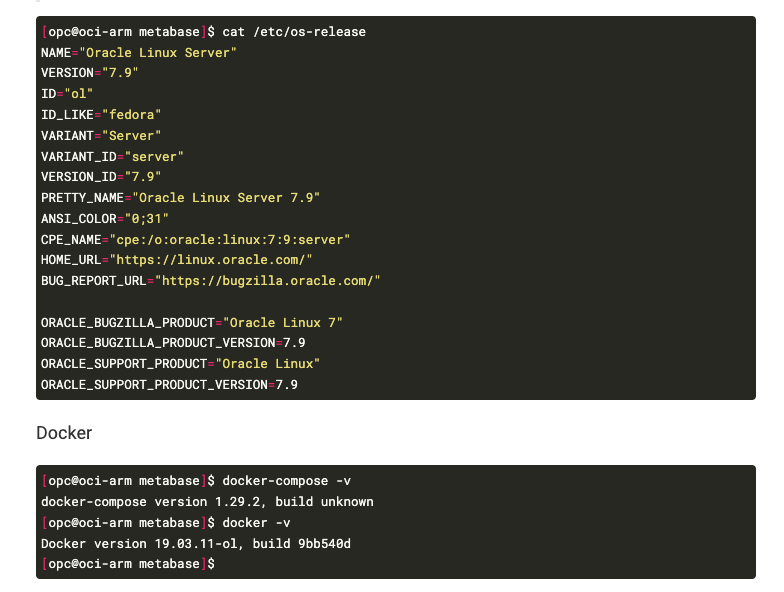

Hugo wowchemyのシンタックスハイライト変更
端末移行に伴いHugo（本ブログの実行環境）を移行中。シンタックスハイライトの変更方法がわからなくなってしまって調べたのでメモ。
zatoima@M1MBA zatoima.github.io % pwd
/Users/zatoima/work/hugo/zatoima.github.io
zatoima@M1MBA zatoima.github.io %
zatoima@M1MBA zatoima.github.io % mkdir -p assets/css/libs/chroma/
zatoima@M1MBA zatoima.github.io % hugo gen chromastyles --style=monokai > assets/css/libs/chroma/monokai.css
zatoima@M1MBA zatoima.github.io % ls -l assets/css/libs/chroma/monokai.css
-rw-r--r-- 1 zatoima staff 4394 9 26 17:15 assets/css/libs/chroma/monokai.css
syntax_highlighter部分を変更する
zatoima@M1MBA zatoima.github.io % cat config/_default/params.yaml
# SITE SETUP
# Guide: https://wowchemy.com/docs/getting-started/
# Documentation: https://wowchemy.com/docs/
# This file is formatted using YAML syntax - learn more at https://learnxinyminutes.com/docs/yaml/
features:
syntax_highlighter:
theme_light: monokai
theme_dark: monokai
math:
enable: false
〜省略〜
https://wowchemy.com/docs/getting-started/customization/#code-syntax-highlighting
Code syntax highlighting
Hugo’s code syntax highlighter is named Chroma. How can we customize Chroma’s light and dark styles?
Check out the languages and styles which Hugo supports at the Chroma Playground
Choose from one of the built-in styles including:
- github-light
- github-dark
- dracula
or import a Hugo Chroma style to your
assets/css/libs/chroma/folder (creating the folders as needed). For example, to import thexcodestyle asxcode-lightandxcode-darkasxcode-dark:mkdir -p assets/css/libs/chroma/ hugo gen chromastyles --style=xcode > assets/css/libs/chroma/xcode-light.css hugo gen chromastyles --style=xcode-dark > assets/css/libs/chroma/xcode-dark.cssOnce you have chosen your styles, reference them in
params.yaml:features: syntax_highlighter: theme_light: xcode-light theme_dark: xcode-dark
こんな感じのシンタックスハイライトに。

関連しているかもしれない記事
- Hugo AcademicのError failed to resolve output formatエラーについて
- Hugo wowchemy（旧Academic）における記事幅の調整方法
- Hugoにおける実行ファイルのnot foundについて
- Hugo wowchemy（旧Academic）におけるbuilding siteエラー
- Google カスタム検索エンジンでHugoのサイト内検索を行う